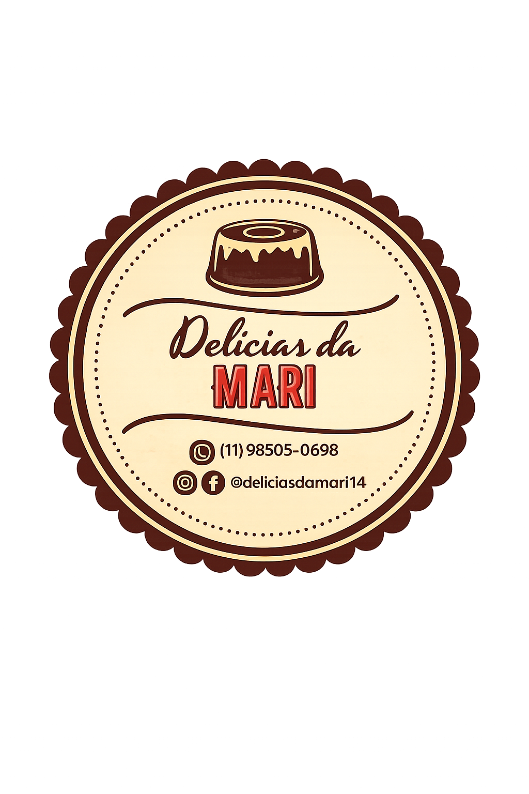

<!DOCTYPE html>
<html lang="en">

<head>
    <meta charset="UTF-8">
    <meta name="viewport" content="width=device-width, initial-scale=1.0">
    <title>Document</title>
    <link rel="stylesheet" href="assets/css/cardapio.css">
    <link rel="stylesheet" href="assets/css/style.css">
    <link rel="preconnect" href="https://fonts.googleapis.com">
    <link rel="preconnect" href="https://fonts.gstatic.com" crossorigin>
    <link href="https://fonts.googleapis.com/css2?family=Plus+Jakarta+Sans:ital,wght@0,200..800;1,200..800&display=swap"
        rel="stylesheet">

    <link rel="stylesheet" href="https://cdn.jsdelivr.net/npm/bootstrap-icons@1.11.3/font/bootstrap-icons.min.css">
</head>

<body>
    <div class="container">

    </div>

    <footer class="footer-principal">
        <div class="container footer-grid">

            <div class="footer-col brand-info">
                
                <p>Levando doçura, amor e momentos inesquecíveis para a sua mesa através da confeitaria artesanal.</p>
            </div>

            <div class="footer-col links-uteis">
                <h3>Navegação</h3>
                <ul>
                    <li><a href="index.html">Início</a></li>
                    <li><a href="index.html#sobre">Sobre Nós</a></li>
                    <li><a href="cardapio.html">Cardápio</a></li>
                    <li><a href="index.html#contato">Contato</a></li>
                </ul>
            </div>

            <div class="footer-col horario-atendimento">
                <h3>Atendimento</h3>
                <p><i class="bi bi-clock"></i> Segunda a Sexta: 09h às 19h</p>
                <p><i class="bi bi-clock"></i> Sábado: 09h às 13h</p>
                <p><i class="bi bi-geo-alt"></i> Retiradas</p>
            </div>

            <div class="footer-col redes-sociais">
                <h3>Acompanhe a Mari</h3>
                <p>Fique por dentro das fornadas diárias e novidades!</p>
                <div class="social-icons">
                    <a href="https://www.instagram.com/delicias_da_mari_bolos?utm_source=ig_web_button_share_sheet&igsh=ZDNlZDc0MzIxNw=="
                        target="_blank" rel="noopener" aria-label="Instagram"><i class="bi bi-instagram"></i></a>
                    <a href="https://wa.me/5511985050698" target="_blank" rel="noopener" aria-label="WhatsApp"><i
                            class="bi bi-whatsapp"></i></a>
                    <a href="https://facebook.com" target="_blank" rel="noopener" aria-label="Facebook"><i
                            class="bi bi-facebook"></i></a>
                </div>
            </div>
        </div>

        <div class="footer-bottom">
            <div class="container footer-bottom-content">
                <p>Atividade de Programação Web.</p>
                <p>&copy; 2026 Delícias da Mari. Todos os direitos reservados.</p>

            </div>
        </div>
    </footer>

    <script type="module" src="./assets/js/cardapio.js"></script>
</body>

</html>